1) Project Introduction
Background / Overview: This experiment was conceived due to an unsuccessful initial route search for a missing aircraft. The October 8, 1996 crash of an air cargo plane near Cle Elum, WA was missed by some of the best eyes in the business, using proven present search practices, because of wispy fog and early morning lighting conditions. (The target airplane was later spotted in thick trees by a Washington Air Search And Rescue (WASAR) volunteer, the noon sun aiding his expanding square search.)
As the target aircraft was still warm when it was missed at 7:00 a.m., it was thought that thermal imaging equipment might aid the human eye. But would it fit into the SAR system? Could it be installed quickly enough to be useful? (Statistically, air crash victims only survive 24 hours if injured, so ready availability is part of "effectiveness".) Would it be ultimately affordable?

|
Figure 1 Detecting search clues related to a lost aircraft or human in typical Washington mountain foliage is a real challenge. This shows the aircraft wreck in a small clearing, in shadows from the 2:00pm sun. |
"Search effectiveness" varies widely, depending on visibility, lighting, foliage, and terrain. The human part of "search effectiveness" is also dependent on alertness and the amount of turbulence. Infrared (IR) has been shown to be useful in limited situations, but the equipment is expensive, not normally available to air search and rescue (Air SAR) organizations.
Basic Research Objectives:
The purposes of the experiment were to:
- Demonstrate practical application of long-infrared detection equipment for air search uses at low cost.
- Derive optimal IR operating procedures which are practical in the existing search environment.
- Determine the best uses of infrared which compliment human eye and electronic searching.
Uniqueness of Project:
Gyro-stabilized, long-infrared equipment has been used by the military and police with some notable successes. Most of this equipment is helicopter-mounted and used in real time. The equipment is expensive and installed on high value assets which are not employed in the majority of search activities in Washington state.
2) Project Support in 1997:
This effort was sponsored by the Flight Research Project (FRP) group of the N.W. Section of the American Institute of Aeronautics & Astronautics (AIAA).
Project Manager and Crew: Tom Jensen is the project manager for
this experiment, and the nominal camera operator. Other team members include:
- "Mac" MacSpadden is the WSDOT-Aviation State SAR Coordinator, who reviewed the proposal and procedures.
- Al Banholzer, USAF (ret.), is a Search Pilot who flew the initial checkout flight.
- Lew Wallick is a Boeing Director of Flight Test (ret.) and Search Pilot who flew the balance of the nine or ten experimental flights.
- Nancy Jensen, my patient wife and owner of a Cessna C180 taildragger used for these flights.
Other Support: funding, materials, time, etc.
No funding was provided. Tom Jensen purchased materials, fabricated the camera mount and wiring harness, and installed the camera in the aircraft. Approximately $60 in materials and 30 hours fabrication and development time were expended in the installation. About $400 was incurred in aircraft operating expenses. An Inframetrics Infracam long-infrared camera (was loaned by Boeing for two, two-week periods in late fall and winter 1997 under the auspices of the AIAA FRP. Bob Watzlavick of the Boeing Wind Tunnel group provided advice and arranged for minor modifications to the Boeing-built camera remote control. VPL of Calgary, BC donated a software upgrade which provided altitude readouts on the recordings.
3) Technical Briefing of Project Details From 1997:
Goals:
To develop a simple IR camera installation for light aircraft which builds on experience with an aircraft-mounted visible T.V. recording system; apply this infrared technology to a controlled simulation of an air search situation for investigation of potential improvement in search effectiveness; finally, document practical applications which are found.
To investigate use of an unstabilized IR camera in an aircraft flying a typical search pattern and to investigate the effect on search effectiveness as compared with the unaided human eye. Real time results will be compared with crew observations and subsequent review of video tapes.
Traditional search patterns to be initially explored were "initial route search," "contour," and "modified creeping line" grid search patterns as used in Washington state. Variations in temperature and lighting condition were also to be explored, along with techniques which might compliment a searcher using the unaided human eye.
If results are nominal (i.e., no search pattern modification is needed for the use of IR equipment), variations in foliage will also be explored.
The camera will be used in the Cessna 180 operating under standards established by the primacy air search agency in Washington state. Search effectiveness will be judged by review with the state coordinator for air search and rescue. Documentation by link to the WASAR website is proposed along with a report and a presentation to the AIAA Flight Research Project group.
Accomplishments:
A long-infrared camera and recording system was successfully installed in an air search aircraft. Experimental development flights and realistic air search profiles were flown. Some evaluation of one camera model was completed with modest but promising results. A good understanding of the direction for promising subsequent investigation was gained.
Current Status- Installation:
An Inframetrics Infracam long-infrared camera with remote gain and level controls was installed in the cargo bay of Cessna 180 aircraft. The camera and remote controller for gain and level controls was provided by Boeing under auspices of the AIAA Flight Research Project.
Relocated from an earlier installation were a Sony XC999 miniature TV camera and recording equipment. This included a VPL VPC-100 Video Position Captioner which overlays Global Positioning System (GPS) coordinates and data on the TV display. A welded aluminum base and riveted sheet metal camera mount with cable stanchions was fabricated for installation in the aircraft. A wiring harness was built on the remote control cable to provide camera power and a signal line for the visible TV camera. This wiring harness included a switchbox for selecting the camera to be recorded and power for the Infracam.


Figure 2 shows the control unit for the Infracam, a Sony GV500 8mm recorder/display unit, the remote Inframetrics and Sony TV cameras, a wiring harness and switchbox, and the mounting base for the cameras. Figure 3 at right is a rear view of the installed equipment showing switchbox and harness..

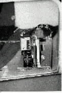

Figure 4 at left shows both cameras installed in the cargo bay
of the aircraft,
pointing down at 45°. The initial installation pointing 60° from
the flightpath is shown at left. Figure 4A shows a later installation at
90° to the flightpath; this was found necessary to simplify camera
aiming, particularly for orbiting turns.
Figure 5 at right is an external view of the cargo bay door closure which was
fabricated from a formed piece of sheet metal. The tape (used to close the
holes for the initial 60° camera pointing) is approximately located where a
future spoiler or air dam may be located to reduce minor entry of rain
and engine exhaust fumes.
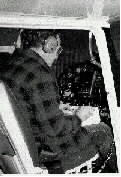
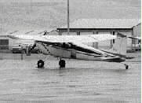
The video display/recorder was used in its location from a previous installation in the aircraft, mounted on the copilot's control yoke. Figure 6 at left is of team member Al Banholzer at the operator's station with the Infracam remote control on his lap. This arrangement worked well for relatively smooth air. The photo at right is of Nancys C180 at Wenatchee, WA, with an unpainted cargo door closure.
Current Status-Experimental Flight Results:
Nine flights and nearly eight hours of flying with three pilots and two IR camera operators have yielded about 3-1/2 hours of 8mm video tape.
The IR camera was used with a remote control for all adjustments except focusing. Focusing was accomplished manually inflight but it was found necessary to lock the adjustment with tape. Power, standby, and image (white = hot or black = hot) were on a rotary switch; 16-turn potentiometers were used for GAIN (span of thermal sensitivity) and LEVEL (absolute temperature around which GAIN is centered).
The GAIN and LEVEL controls were not "calibrated", but a lamp would indicate saturation or out of range. This necessitated practice to achieve a "feel" for establishing an image and then optimizing detection for the expected target and surrounding thermal conditions. This led to the procedure of making a calibration run over known targets in an attempt to optimize settings for the given thermal and lighting environmental conditions.
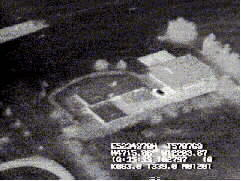
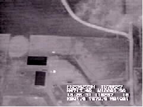
Figures 7 at left shows an infrared video image of an initial calibration run over the base airport with various familiar targets, hot and cold (this picture was enhanced to increase contrast with simple video frame grabber software). The time of day is the second block in the third line, and the GPS (approximate sea level) altitude is the last block of the fourth line. The ground elevation for this picture is about 575'). The picture at right is similar, again with familiar targets.
The narrow field of view of the IR camera also required modification of traditional searching patterns. The camera would scan a path width equal to about half of the aircraft's height above ground. This presented an imposing navigation problem for simulated "Initial Route Searches" in that full coverage could only be assured by careful tracking of adjacent, closely spaced flight paths. GPS was a significant asset, particularly at night, and Lew Wallick's legendary flying skills helped to minimize effects of this understood but temporarily uncorrectable problem.
A similar problem existed for traditional grid searching patterns.
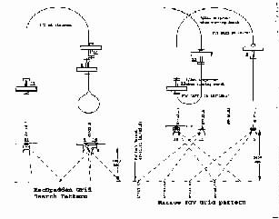
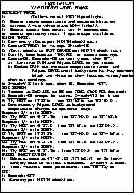
Grid searching of relatively flat terrain in Washington is done with the MacSpadden (modified creeping line) search pattern shown in Figure 8. The "Narrow FoV" pattern also shown appeared to provide satisfactory results but required careful preplanning. This search pattern was felt to be unacceptably complex and likely to degrade search effectiveness. The standard format Flight Test Card shown in Figure 9 at right was used as a checklist on several flights to promote orderly completion of the intended tasks, particularly for simulated grid searching.

Figure 10 shows a "Black = hot" selection of smoldering brush from about 5000 slant range. This appeared to be more useful for initial detection of warm targets at higher altitudes. "White = hot" was generally used and was better for recognition of targets in thermally cluttered backgrounds..
Literature for the IR camera stated theoretical performance as shown in the table below: Table 1: Infracam Performance
Table 1: Infracam Performance
| Slant Range | ||
|---|---|---|
|
|
|
|
|
|
|
|
|
|
|
|
|
|
|
|
This performance was approximately verified by our experimental flight test results.
| Slant Range | |||
|---|---|---|---|
| Recognition | Detection | ||
| Clothed Human, large dog, or power transformer on ground | 600' -800' | 2000'+ | No detection night or many day operations. |
| Power transformer on pole (small, but warmer) | 1000' | 2-3000 | No detection |
| Distinguish horse from cow | 500' - 1400 (Fig 7A) | No observation attempted | Detection only |
| Recognize horse OR cow | 800'-1000' | 2-3000' | 800+ recognition |
| Distinguish pig from horse or cow | 850 (Fig. 15) | No observation attempted | -- |
| Pickup with canopy | 1000 - 1400 | 4000 | 3000+ |
| Low-emmisivity aircraft with sunlight, on ground and pavement | 1400-2700' (Fig 11) | No observation attempted | 1500' recognition. |
| Low-emmisivity aircraft wreckage with overcast on ground. | No (Fig. 12) | No | 1000 detection |
| Clothed human, with overcast, on ground | No observation attempted (Fig. 12) | 1000' (Fig. 12) | No detection (Fig. 12A) |
| Vertical mineshaft, daylight, dusk, dark | 500- 700' (If target signature is known). | 1800 | No detection except with good light. (Fig 13) |
Manipulation was necessary for some of the video frame captures of still images shown in this report. Viewing real time imaging yielded the most useful information, in part because this allowed immediate repeat passes over targets of interest; it also aided in perception of the targets because the operators brain could integrate subtle clues.
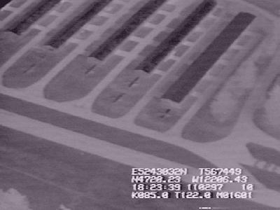

Figures 11 & 11A above are IR images of a local airport recorded at two altitudes in near darkness after a relatively warm winter day.
|
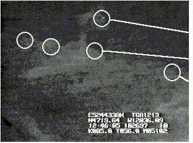 |
Figure 12 Pickup Low-emmisivity Aircraft Wreckage (not visible) Human |
|
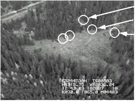 |
Figure 12A Pickup Line of aircraft wreckage Human (not visible) |
A simulated aircraft wreck was observed in a recent search and rescue practice exercise near Blewett Pass, WA. Figure 12 on the previous page shows only the warm targets (a pickup truck and a human) but the low-emmisivity fuselage and wing pieces were not detectable. The visible picture in Figure 12A readily shows "something" (white pieces of wreckage) but not the human target.
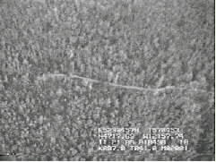
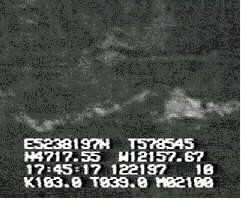
Figure 13 at left shows a vertical mine shaft is shown in visible near noon (at left end of road). At right is the same mine shaft in IR at dusk. (This picture has been magnified and shows the opening as a diamond shape at the left end of the road, upper center.)
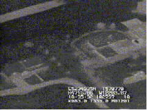
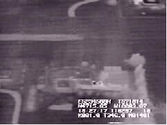
Livestock animals are readily recognizable day or night by IR in Figure 15. Three pigs show lower center right, and a pickup with a warm engine and cold canopy in the upper center right.
A slightly higher elevation taken a week later and slightly higher altitude. The pigs have departed.
4) 1997 Lessons Learned:
Thermal imaging appears to hold great promise for complimenting the search capability of a human observer, particularly under degraded lighting conditions. This could be especially valuable for the first 24 hours of a search (life-critical), and the initial route search which is conducted day or night, weather permitting.
The installation developed for this project required about two hours to install, including assembling the wiring harness. This could be reduced to around 20 minutes by prefabricating a complete harness and redesigning of the camera mounting attachment to the aircraft..
The camera installation on the left side of the aircraft, pointing down at 45° and 90° to the flight path appears acceptable for air search applications with two crewmembers (one pilot, one operator); this installation requires a remote control for the camera.
The camera installation pointing 60° left of flight path may be preferable for searching with an observer on the left side of the aircraft; in this situation, the IR camera might be used to "flag" potential targets for a closer look by the observer.
A wider field of view (at least 30°) would reduce the workload and piloting skill required.
Simplified calibration or other means of indexing the IR camera to the environmental conditions and anticipated target would also be valuable and reduce the skill level and need for recent practice.
Airflow with exhaust and entrained rain into the camera cavity (cargo bay) could be eliminated by the design of a spoiler.
5) Detailed Plan and Objectives for 1998:
The primary areas which need to be addressed are: · Utilize a wider field of view for better correlation of IR and visible imaging, simplify aircraft "pointing" and navigation tasks to better harmonize the use of IR equipment with the existing Air SAR environment. · Calibrate of IR camera GAIN and LEVEL settings to enable better quantification of practices for effective use. · Conduct flights with three crewmembers to discover optimal combination of IR and human sensing. · Fabricate camera mount adapter to use seat track installation in cargo bay for "rapid response installation". (rev A) · Investigate long-term loan of Thermacam camera from Inframetrics, Inc. after proving trials using Boeing camera. (rev A)
The team has discussed and decided to pursue the investigation per the above amended plans. Modest support from the Flight Research Project proposal will be pursued, as will loan of a camera from Inframetrics. The AIAA support of this project will be referenced in a proposal to Inframetrics to encourage donation or long-term loan of a camera. (While the total installation value used in this experiment is a fraction of that for a gyro-stabilized, zoomable, higher fidelity IR camera, it is still an imposing figure for the volunteer community or Washington State Aviation.) The AIAA also noted that this experiment may be interesting to the manufacturer because of proving possible business opportunities.(rev A)
6) Requested Support for 1998 from the AIAA FRP:
A short-term loan from Boeing of an Inframetrics Thermagram thermal imaging camera would address the primary area requiring continued investigation. (A long-term loan from Inframetrics will also be pursued if results are favorable.) This unit is similar to the Infracam, but provides direct temperature readout to simplify camera adjustments necessary for useful detection. It also has a shorter focal length lens with a 32° FoV. (rev A)
Minor funding to fabricate a wiring harness and seat tracks or similar quick installation utilities may also be pursued. $350 is requested of the Flight Research Project for this material. Approximately $185 for materials, with any additional monies directed to fuel and aircraft operating expenses. (rev A)
Linked FRP Report added 7/7/98, updated 7/10/98.
Your comments and suggestions are invited, in particular if you have any
IR advice or experiences to share. Please write: